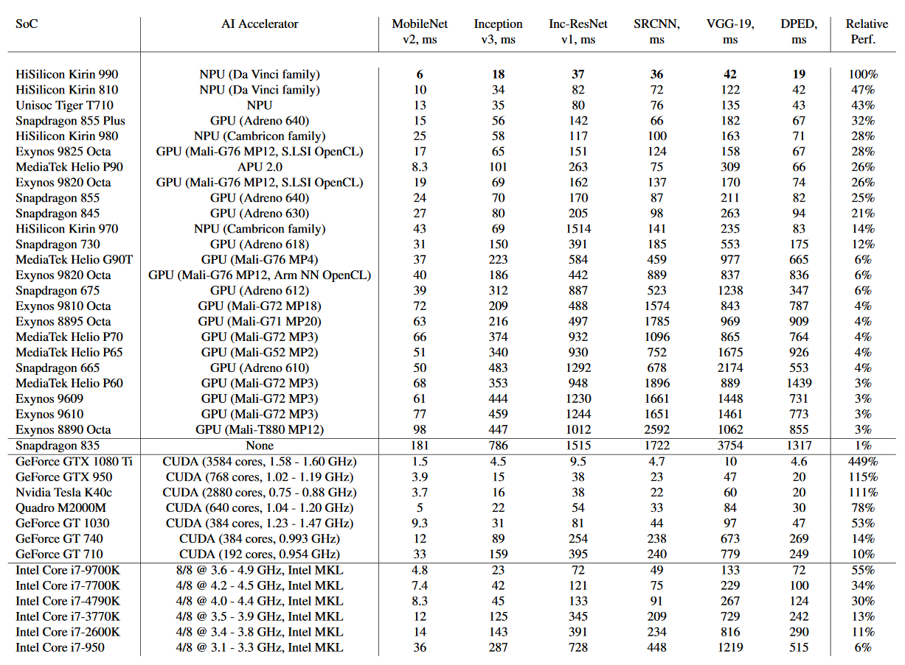
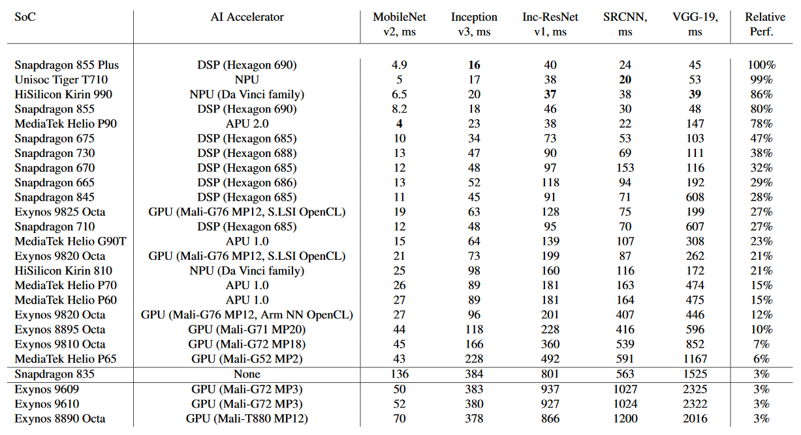

From Kirin 970 to Snapdragon 855 Plus:
Performance Review of all Mobile SoCs with AI capabilities
The performance of mobile AI accelerators has been evolving rapidly in the past two years, nearly doubling with each new generation of SoCs. The current 4th generation of mobile NPUs is already approaching the results of CUDA-compatible Nvidia graphics cards presented not long ago, which together with the increased capabilities of mobile deep learning frameworks makes it possible to run complex and deep AI models on mobile devices. Below, we evaluate the performance and compare the results of all chipsets from Qualcomm, HiSilicon, Samsung, MediaTek and Unisoc that are providing hardware acceleration for AI inference. The full version of this material can be found in the AI Benchmark 2019 ICCV paper.

Hardware Acceleration
The first attempts to accelerate AI models on mobile GPUs and DSPs were made in 2015 by Qualcomm, Arm and other SoC vendors, though at the beginning mainly by adapting deep learning models to the existing hardware. Specialized AI silicon started to appear in mobile SoCs with the release of the Snapdragon 820 / 835 with the Hexagon V6 68x DSP series optimized for AI inference, the Kirin 970 with a dedicated NPU unit designed by Cambricon, the Exynos 8895 with a separate Vision Processing Unit, MediaTek Helio P60 with AI Processing Unit, and the Google Pixel 2 with a standalone Pixel Visual Core. We can now distinguish four generations of mobile SoCs based on their AI performance, capabilities and release date:
● Generation 1: All legacy chipsets that can not provide AI acceleration through the Android operating system, but still can be used to accelerate machine learning inference with special SDKs or GPU-based libraries. All Qualcomm SoCs with Hexagon 682 DSP and below, and the majority of chipsets from HiSilicon, Samsung and MediaTek belong to this category. It is worth mentioning that nearly all computer vision models are largely based on vector and matrix multiplications, and thus can technically run on almost any mobile GPU supporting OpenGL ES or OpenCL. Yet, this approach might actually lead to notable performance degradation on many SoCs with low-end or old-gen GPUs.
● Generation 2: Mobile SoCs supporting Android NNAPI and released after 2017. They might provide acceleration for only one type of models (float or quantized) and are typical for the AI performance in 2018.
|
|
|
| Qualcomm: |
Snapdragon 845 (acceleration: Hexagon 685 + Adreno 630); |
| Snapdragon 710 (acceleration: Hexagon 685); |
| Snapdragon 670 (acceleration: Hexagon 685); |
| HiSilicon: |
Kirin 970 (acceleration: NPU, Cambricon); |
| Samsung: |
Exynos 9810 (acceleration: Mali-G72 MP18); |
| Exynos 9610 (acceleration: Mali-G72 MP3); |
| Exynos 9609 (acceleration: Mali-G72 MP3); |
| MediaTek: |
Helio P70 (acceleration: APU 1.0 + Mali-G72 MP3); |
| Helio P60 (acceleration: APU 1.0 + Mali-G72 MP3); |
| Helio P65 (acceleration: Mali-G52 MP2); |
● Generation 3: Mobile SoCs supporting Android NNAPI and released after 2018. They provide hardware acceleration for all model types and their AI performance is typical for the corresponding SoC segment in 2019.
|
|
|
| Qualcomm: |
Snapdragon 855 Plus (acceleration: Hexagon 690 + Adreno 640); |
| Snapdragon 855 (acceleration: Hexagon 690 + Adreno 640); |
| Snapdragon 730 (acceleration: Hexagon 688 + Adreno 618); |
| Snapdragon 675 (acceleration: Hexagon 685 + Adreno 612); |
| Snapdragon 665 (acceleration: Hexagon 686 + Adreno 610); |
| HiSilicon: |
Kirin 980 (acceleration: NPU x 2, Cambricon); |
| Samsung: |
Exynos 9825 (acceleration: NPU + Mali-G76 MP12); |
| Exynos 9820 (acceleration: NPU + Mali-G76 MP12); |
| MediaTek: |
Helio P90 (acceleration: APU 2.0); |
| Helio G90 (acceleration: APU 1.0 + Mali-G76 MP4); |
● Generation 4: Recently presented chipsets with next-generation AI accelerators. Right now, only the
HiSilicon Kirin 990,
HiSilicon Kirin 810 and
Unisoc Tiger T710 SoCs belong to this category. Many more chipsets from other vendors will come by the end of this year.
A detailed review of the hardware acceleration resources available on each platform can be found
here (Sections 2.1-2.6).
Benchmark Results
As the performance of mobile AI accelerators has grown significantly in the past year, we decided to add desktop CPUs and GPUs used for training / running deep learning models to the comparison as well. This will help us to understand how far mobile AI silicon has progressed till now. In this section, we present quantitative results obtained from over 20,000 mobile devices tested in the wild (including a number of prototypes) and discuss in detail the performance of all available mobile chipsets providing hardware acceleration for floating-point or quantized models. The detailed performance results for smartphones can be found here.
Floating-Point Performance
At the end of September 2018, the best publicly available results for floating-point inference were exhibited by the Kirin 970. The increase in the performance of mobile chips that happened here since that time is dramatic: even without taking into account various software optimizations, the speed of the floating-point execution has increased by more than 7.5 times:

The Snapdragon 855, HiSilicon Kirin 980, MediaTek Helio P90 and Exynos 9820 launched last autumn have significantly improved the inference runtime for float models and already approached the results of several octa-core Intel CPUs (e.g. Intel Core i7-7700K / i7-4790K) and entry-level Nvidia GPUs, while an even higher performance increase was introduced by the 4th generation of AI accelerators released this summer (present in the Unisoc Tiger T710, HiSilicon Kirin 810 and 990). With such hardware, the Kirin 990 managed to get close to the performance of the GeForce GTX 950 - a mid-range desktop graphics card from Nvidia launched in 2015, and significantly outperformed one of the current Intel flagships - an octa-core Intel Core i7-9700K CPU (Coffee Lake family, working frequencies from 3.60 GHz to 4.90 GHz). This is an important milestone as mobile devices are beginning to offer the performance that is sufficient for running many standard deep learning models, even without any special adaptations or modifications. And while this might not be that noticeable in the case of simple image classification networks (MobileNet-V2 can demonstrate 10+ FPS even on Exynos 8890), it is especially important for various image and video processing models that are usually consuming excessive computational resources.
An interesting topic is to compare the results of GPU- and NPU-based approaches. As one can see, in the third generation of deep learning accelerators (present in the Snapdragon 855, HiSilicon Kirin 980, MediaTek Helio P90 and Exynos 9820 SoCs), they are showing roughly the same performance, while the Snapdragon 855 Plus with an overclocked Adreno 640 GPU is able to outperform the rest of the chipsets by around 10-15%. However, it is unclear if the same situation will persist in the future: to reach the performance level of the 4th generation NPUs, the speed of AI inference on GPUs should be increased by 2-3 times. This cannot be easily done without introducing some major changes to their micro-architecture, which will also affect the entire graphics pipeline. It therefore is likely that all major chip vendors will switch to dedicated neural processing units in the next SoC generations.
Accelerating deep learning inference with the mid-range (e.g., Mali-G72 / G52, Adreno 610 / 612) or old-generation (e.g., Mali-T880) GPUs is not very efficient in terms of the resulting speed. Even worse results will be obtained on the entry-level GPUs since they come with additional computational constraints. One should, however, note that the power consumption of GPU inference is usually 2 to 4 times lower than the same on the CPU. Hence this approach might still be advantageous in terms of overall energy efficiency.
One last thing that should be mentioned here is the performance of the default Arm NN OpenCL drivers. Unfortunately, they cannot unleash the full potential of Mali GPUs, which results in atypically high inference times compared to GPUs with a similar GFLOPS performance (e.g. the Exynos 9820, 9810 or 8895 with Arm NN OpenCL). By switching to their custom vendor implementation, one can achieve up to 10 times speed-up for many deep learning architectures: e.g. the overall performance of the Exynos 9820 with Mali-G76 MP12 rose from 6% to 26% when using Samsung's own OpenCL drivers. The same also applies to Snapdragon SoCs which NNAPI drivers are based on Qualcomm's modified OpenCL implementation.
Quantized Performance
This year, the performance ranking for quantized inference is led by the Hexagon-powered Qualcomm Snapdragon 855 Plus chipset accompanied by the Unisoc Tiger T710 with a stand-alone NPU. These two SoCs are showing nearly identical results in all int-8 tests, and are slightly faster than the Kirin 990, Helio P90 and the standard Snapdragon 855. As claimed by Qualcomm, the performance of the Hexagon 690 DSP has approximately doubled over the previous-generation Hexagon 685. The latter, together with its derivatives (Hexagon 686 and 688), is currently present in Qualcomm's mid-range chipsets. One should note that there exist multiple revisions of the Hexagon 685, as well as several versions of its drivers. Hence, the performance of the end devices and SoCs with this DSP might vary quite significantly (e.g., Snapdragon 675 vs. 845).

As mobile GPUs are primarily designed for floating-point computations, accelerating quantized AI models with them is not very efficient in many cases. The best results were achieved by the Exynos 9825 with Mali-G76 MP12 graphics and custom Samsung OpenCL drivers. It showed an overall performance similar to that of the Hexagon 685 DSP (in the Snapdragon 710), though the inference results of both chips are heavily dependent on the running model. Exynos mid-range SoCs with Mali-G72 MP3 GPU were not able to outperform the CPU of the Snapdragon 835 chipset, similar to the Exynos 8890 with Mali-T880 MP12 graphics. An even bigger difference will be observed for the CPUs from the more recent mobile SoCs. As a result, using GPUs for quantized inference on the mid-range and low-end devices might be reasonable only to achieve a higher power efficiency.
Floating-point vs. Quantized Inference
One can see that the above results are split into two categories with quite different performance numbers, and the reasonable question here would be what inference type is more appropriate for being used on smartphones. Unfortunately, there has been a lot of confusion with these two types in the mobile industry, including a number of incorrect statements and invalid comparisons. We therefore decided to devote a separate section to them and describe and compare their benefits and disadvantages. We divided the discussion into three sections: the first two are describing each inference type separately, while the last one compares them directly and makes suggestions regarding their application.
Floating-Point Inference
Advantages: The model is running on mobile devices in the same format as it was originally trained on the server or desktop with standard machine learning libraries. No special conversion, changes or re-training is needed; thus one gets the same accuracy and performance as on the desktop or server environment.
Disadvantages: Many recent state-of-the-art deep learning models, especially those that are working with high-resolution image transformations, require more than 6-8 gigabytes of RAM and enormous computational resources for data processing that are not available even in the latest high-end smartphones. Thus, running such models in their original format is infeasible, and they should be first modified to meet the hardware resources available on mobile devices.
Quantized Inference
Advantages: The model is first converted from a 16-bit floating point type to int-8 format. This reduces its size and RAM consumption by a factor of 4 and potentially speeds up its execution by 2-3 times. Since integer computations consume less energy on many platforms, this also makes the inference more power efficient, which is critical in the case of smartphones and other portable electronics.
Disadvantages: Reducing the bit-width of the network weights (from 16 to 8 bits) leads to accuracy loss: in some cases, the converted model might show only a small performance degradation, while for some other tasks the resulting accuracy will be close to zero. Although a number of research papers dealing with network quantization were presented by Qualcomm and Google all showing decent accuracy results for many image classification models, there is no general recipe for quantizing arbitrary deep learning architectures. Thus, quantization is still more of a research topic, without working solutions for many AI-related tasks (e.g image-to-image mapping or various NLP problems). Besides that, many quantization approaches require the model to be retrained from scratch, preventing the developers from using available pre-trained models provided together with all major research papers.
Comparison
As one can see, there is always a trade-off between using one model type or another: floating-point models will always show better accuracy (since they can be simply initialized with the weights of the quantized model and further trained for higher accuracy), while integer models yield faster inference. The progress here comes from both sides: AI accelerators for floating-point models are becoming faster and are reducing the difference between the speed of INT-8 and FP16 inference, while the accuracy of various network quantization approaches is also rising rapidly. Thus, the applicability of each approach will depend on the particular task and the corresponding hardware / energy consumption limitations: for complex models and high-performance devices float models are preferable (due to the convenience of deployment and better accuracy), while quantized inference is clearly beneficial in the case of low-power and low-RAM devices and quantization-friendly models that can be converted from the original float format to INT-8 with a minimal performance degradation.
When comparing float and quantized inference, one good analogy would be the use of Full HD vs. 4K videos on mobile devices. All other things being equal, the latter always have better quality due to their higher resolution, but also demand considerably more disc space or internet bandwidth and hardware resources for decoding them. Besides that, on some screens the difference between 1080P and 4K might not be visible. But this does not mean that one of the two resolutions should be discarded altogether. Rather, the most suitable solution should be used in each case.
Last but not least, one should definitely avoid comparing the performance of two different devices by running floating-point models on one and quantized models on the other. As they have different properties and show different accuracy results, the obtained numbers will make no sense (same as measuring the FPS in a video game running on two devices with different resolutions). This, however, does not refer to the situation when this is done to demonstrate the comparative performance of two inference types, if accompanied by the corresponding accuracy results.
28 October 2019 Andrey Ignatov | AI Benchmark


{kind=link}
{kind=link}